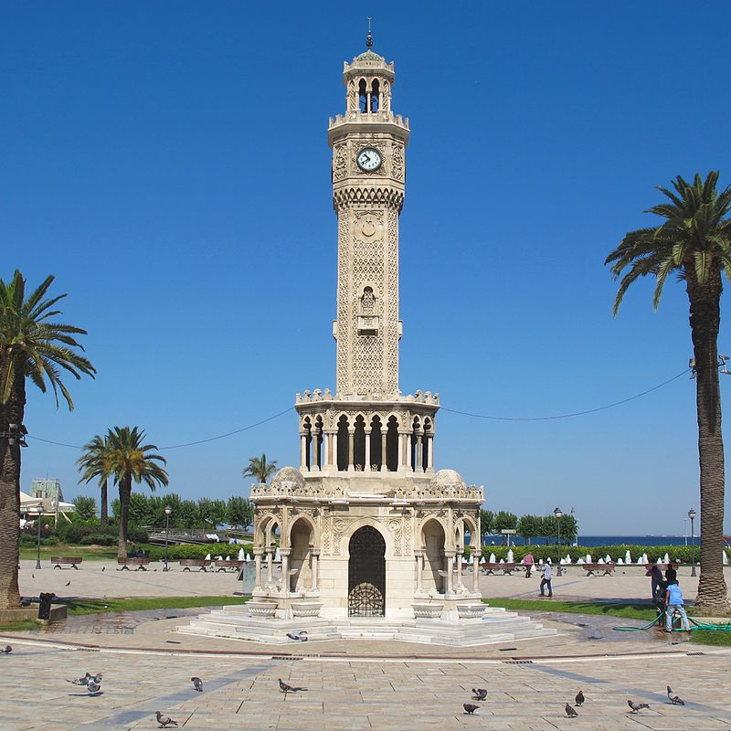

Sehenswürdigkeiten in Izmir
Uhrturm

Das Wahrzeichen von Izmir - Der Uhrenturm (Saat Kulesi) ist nicht nur Wahrzeichen von Konak, sondern von ganz Izmir (früher Smyrna) und befindet sich am Konak Platz in unmittelbarer Nähe zur Yalı-Moschee.
Er wurde durch den levantinisch-französischen Architekten Raymond Charles Péré im Auftrag von Sadrazam Mehmet Said Pasa 1901 zum 25. Jahrestag der Thronbesteigung von Abdulhamit II. (reg. 1876–1909) errichtet. Der 25 Meter hohe Turm mit einer Eisen- und Bleikonstruktion und in gehobener osmanischer Architektur gestaltet, wird von vier als Şadırvan gestalteten Brunnen kreisförmig umgeben. Die Säulen sind durch maurische Motive inspiriert. Die Uhrenmechanik ist ein Geschenk des deutschen Kaisers Wilhelm II und ist seit mehr als 100 Jahren ohne Unterbrechung gelaufen. Auf dem Uhrenturm befinden sich keine Inschriften.
Kemeraltı Basar

Kemeraltı (vollständiger, Kemeraltı Çarşısı) ist ein historischer Markt. Der Kemeraltı-Basar, einer der ältesten Marktplätze der Welt, ist auch einer der größten Freiluftmärkte in Izmir. Der Kemeraltı-Basar ist für seine 2.400-jährige Geschichte bekannt und sogar älter als Große Basar (Kapalı Çarşı) in Istanbul. Daher kann es leicht Touristen anziehen. Der Basar von Kemeraltı zieht sowohl bei ausländischen als auch bei einheimischen Touristen große Aufmerksamkeit auf sich.
Mit der Fähre nach Karşıyaka fahren

Um die Schönheit der Bucht von Izmir zu sehen, müssen Sie entweder von Konak oder von Alsancak nach Karsiyakaya reisen.
Seilbahn

Mit der Seilbahn können Sie İzmir aus der Vogelperspektive betrachten und die Aussicht genießen.
Kordon

Begleitung des Ortes, der seit dem Osmanischen Reich zum Symbol von Izmir geworden ist; Das prächtige Gebäude der Gemeinde, das Herrenhaus des Bezirksgouverneurs aus dem Osmanischen Reich, der Uhrenturm, der ein weiteres osmanisches Werk ist und sich in einen perfekten Ort mit der Stadt verwandelt hat, ist die Yalı-Moschee direkt daneben.
Ephesos

Ephesos war eine antike griechische Stadt an der Westküste Anatoliens, 3 km vom heutigen Bezirk Selçuk entfernt, und später eine wichtige römische Stadt. Es war eine der zwölf Städte von Ionia während der klassischen griechischen Periode. Seine Gründung geht auf die Jungsteinzeit 6000 v. Chr. zurück.
Şirince

Manche besagen, dass die Bewohner von Ephesus einen Rückzugsort gesucht haben, andere Geschichten erzählen von ehemaligen Sklaven, die aus der antiken Großstadt auf den rund 300m hohen Hügel gezogen sind um sich ein neues Leben aufzubauen. Bis zum Ende des türkisch- griechischen Befreiungskrieges 1923 lebten in Şirince seit Jahrhunderten christliche Griechen.
Çeşme

Çeşme, eine kleine Hafenstadt auf der Spitze der gleichnamigen Halbinsel, ist von Izmir nur rund 90 km entfernt, von der griechischen Insel Chios, zu der es eine tägliche Fährverbindung gibt, aber gar nur 20km. Die Machthaber in der Gegend wechselten häufig, ehe Rom und später Byzanz für Jahrhunderte die Herrschaft übernahmen. Schon vor 3.000 Jahren war es wegen seiner milden, sauerstoffreichen Luft und wegen der schwefelhaltigen Thermalquellen ein beliebter Kurort.